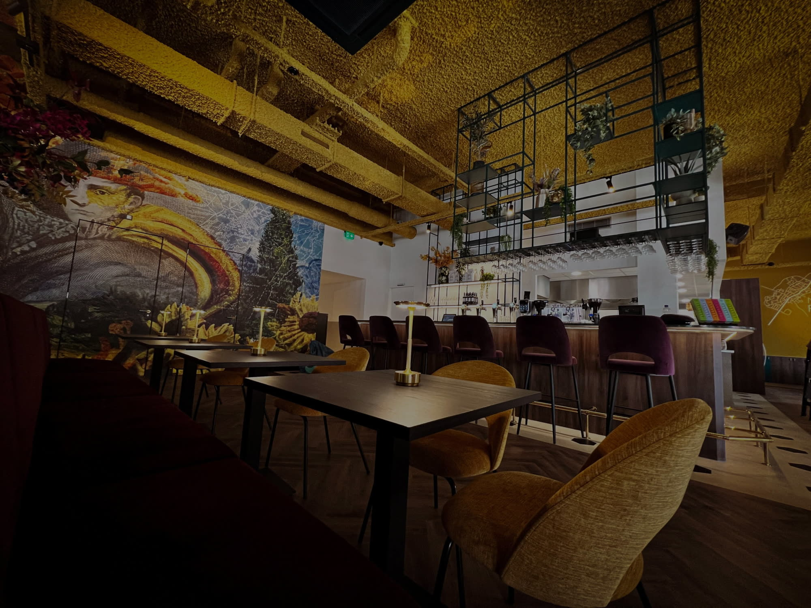
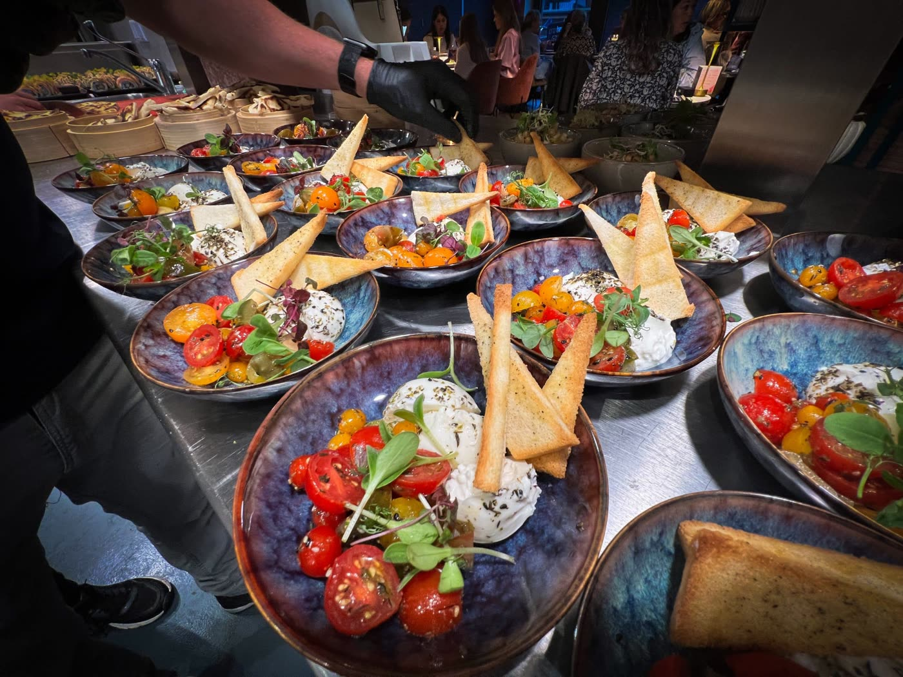
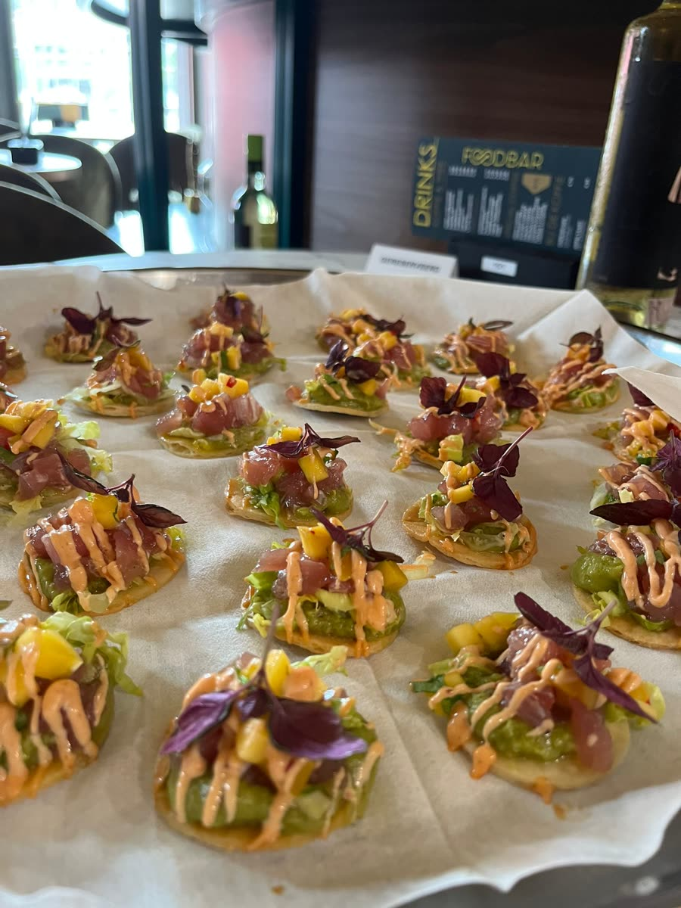
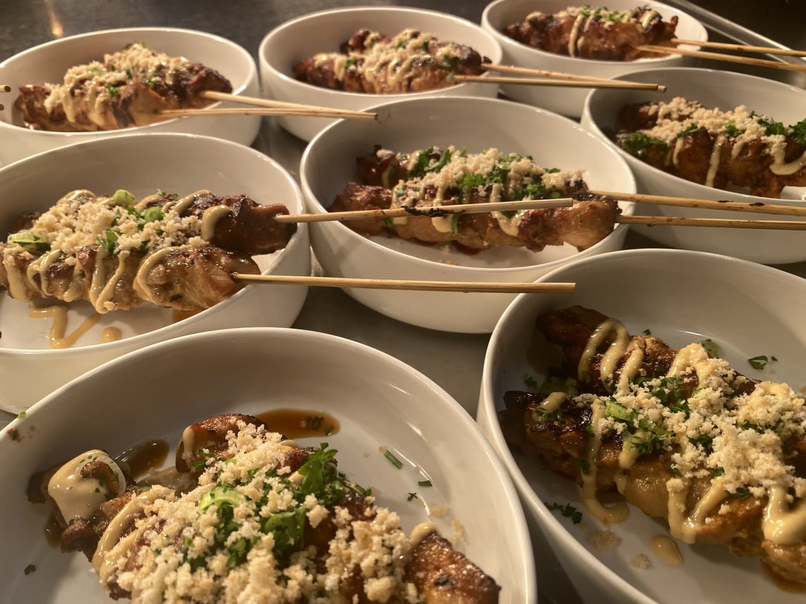
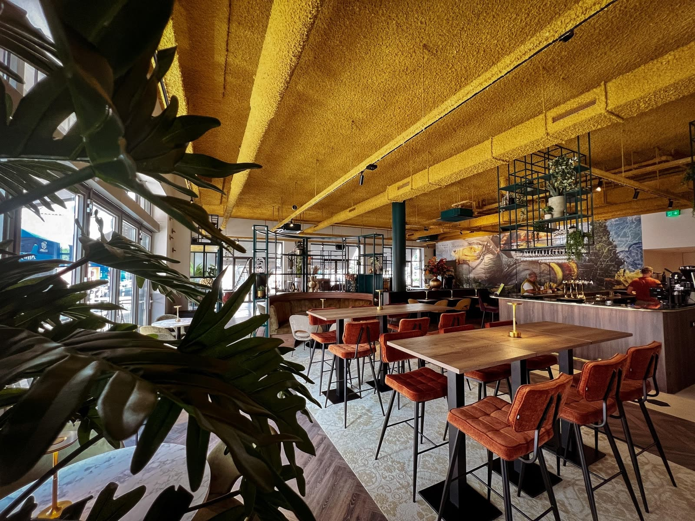
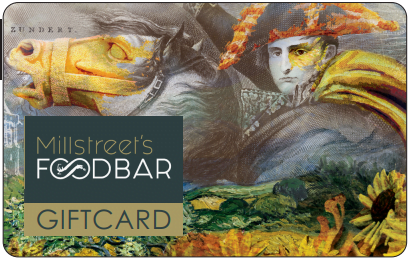

Millstreet'sFOODBAR
Lunch, borrel en shared dining uit onze eigen open keuken. Midden in Zundert, aan de oude Napoleonsweg.
Gewoon gezellig, van alles proeven
Millstreet's Foodbar is een laagdrempelige foodbar: een frisse, mooie zaak midden in het centrum van Zundert. 's Avonds neemt ons team je mee op reis, met invloeden uit Japan, Mexico en Amerika. Maar ook de bekendere gerechten uit de Italiaanse en Franse keuken komen aan bod.
Een klassieke menu-opbouw is niet aan de orde. Wil je een tafeltje vol en van alles proeven? Of even een snelle snack? Laat je leiden door nieuwsgierigheid en eet vooral waar je zin in hebt. Alles om te delen, alles uit onze open keuken, waar je alle processen kunt volgen.
In de middag serveren we een vernieuwde lunchkaart met onder andere pinsa's, buns, loaded focaccia en salades. Liever een kop koffie of een uitgebreide borrel? Dat kan natuurlijk ook.
- Lunch12:00 tot 16:00
- Borrelna de lunch, borrelkaart tot 22:30
- Shared diningwo t/m zo 17:45 tot 21:30



Menukaart
Kies een kaart. Heb je een allergie? Vraag in de zaak naar onze allergenenkaart.
Shared dining, woensdag tot en met zondag van 17:45 tot 21:30 uur. Bestel een paar gerechtjes per persoon en deel alles.
Om te beginnen
Brood & boter6,00
Trappistenbol, kruidenboter
Naanbrood & feta6,00
Naanbrood, za'atar, whipped feta
Coppa di Parma (75 gr)14,00
Dun gesneden Coppa di Parma ham
Oester naturel (per stuk)3,75
Naturel oester geserveerd met citroen
Oester gegratineerd (per stuk)4,50
Kruidenboter, Rotterdamsche Oude kaas
Oester vanille & jalapeño (per stuk)4,00
Vanille, jalapeño, limoen, nori
Oester sinaasappel & venkel (per stuk)4,25
Sinaasappel, venkel, chilipeper
Oesterproeverij (4 oesters)16,00
Naturel, gegratineerd, vanille & jalapeño, sinaasappel & venkel
Fish
Gerookte zalm8,00
Gerookte zalm, sinaasappel, dille, sjalot, mierikswortel, groene kruiden
Tonijn soft taco (2 stuks)14,00
Verse rauwe tonijn, limoen, crème fraîche, zeekraal, avocado, little gem
Tortellini & rivierkreeft17,00
Tortellini ricotta & spinazie, rivierkreeft, saus à la Toscana
Gamba gyoza (4 st)12,00
Gebakken pastei, gambavulling, kewpie, teriyaki, sesam, furikake, wakame
Avocado & tonijn (per stuk)8,00
Tonijnsalade, gebrande avocado, sesam, gerookt paprikapoeder, bonito, zure room
Miso zalm15,00
Gebakken zalm, misoglaze, sojasaus, kappertjes, rode ui, bimi, edamame
Gebakken scampi's16,00
Scampi's, pico de gallo, kimchimayonaise, gerookte amandel, ananas
Chipirones fritos12,00
Gebloemde & gefrituurde inktvisstukjes, citroen, mild pittige dipsaus
Meat
Beef tataki14,00
Tataki van runderkogelbiefstuk, jeow som saus, sesam, radijs, gefrituurde ui, bosui
San Daniele ham & paling (2 st)15,00
Focacciabrood, San Daniele ham, paling, zure room, haringkaviaar, gerookte amandel
Köfte van lam (2 st)13,00
Spiesjes gekruid lamsgehakt, komijn, knoflook, yoghurt, granaatappel, mini pita
Babi pangang & noodles13,00
Gefrituurde varkensnek, gebakken noodles, ketjap, sesam, bosui, broccoli, shiitake, babipangangsaus
Bavette van de grill (±180 gr)19,00
Gegrilde bavette, chimichurri
Yakitori kipspiesjes (4 st)10,00
Pindamayonaise, rijstsalade, kroepoek
Birria taco (per stuk)8,00
Gestoofde shortrib, Mexicaanse peper, ui, mozzarella, koriander, gebakken taco
Boneless ribs15,00
Coleslaw, abrikoos, rode ui
Hot honey fried chicken12,00
Gefrituurde kippendij, sesam, zoet pittige honing glaze
Sushi & sashimi
Tot 21:00 uur. Prijzen voor 4 of 8 stuks.
Shrimp rock tempura roll10,00 / 20,00
Avocado, komkommer, tempura black tiger garnaal
Beef Robespierre roll9,00 / 18,00
Rundvlees, parmezaan, balsamico, truffelmayonaise, rode ui
Spicy tuna roll9,00 / 18,00
Verse tonijn, furikake, komkommer, togarashi, kataifi
Sashimi zalm & tonijn14,00
Sashimi van zalm en tonijn, wasabi, sushi gember, wakame
Vega
Geroosterde bloemkool9,00
Granaatappel, tahinsaus, yoghurt, groene kruiden, gefrituurde ui
Rode biet & Blu'618,00
Dungesneden biet, dille & citroen yoghurt, granny smith, ingelegde rode ui, Blu'61 kaas
Watermeloen & burrata9,00
Watermeloen, burrata, perzik, balsamico, zwarte peper, cashewnoot, limoen
Maïs & parmezaan (2 st)8,00
Geroosterde maïskolf, Parmezaanse kaas, aioli
Bruschetta feta (2 st)7,00
Getoast brood, feta, tomatensalsa
Edamamebonen5,00
Gestoomde sojabonen in de peul, zout
Fries
Classic fries4,75
Mayonaise
Loaded fries6,75
Frietjes, truffelmayonaise, parmezaan
Loaded fries bolognese7,00
Bolognesesaus, rundergehakt, Parmezaanse kaas
Sweets
Appel & kaneel9,00
Blondies, appel, pecannoten, kaneel, kaneelijs
Peer & Bastogne9,00
Gepocheerde peer, vanille citruscrème, Bastogne, chocolade hazelnoten, vanille-ijs
Pandan & witte chocolade9,00
Witte chocolade, citroengras, spekkoek, pandan, crumble
Kaasplankje15,00
5 kazen, kletzenbrood, compote
Lunch van 12:00 tot 16:00 uur, daarna kun je genieten van de borrelkaart.
Signature buns
Steak chimichurri14
Gebakken bavette, rucola, salsa verde, paprika, hot-shot saus
Smokey salmon15
Gerookte zalm, avocado, roomkaas, rode ui, kappertjes, komkommer
Korean crispy chicken12
Gefrituurde krokante kip, gochujang glaze, kimchi, komkommer
Boneless ribs13
Boneless ribs, whisky glaze, pickles, coleslaw, gefrituurde ui
Tuna melt12
Tonijnsalade, kaas, rode ui, jalapeño, bosui, sriracha mayonaise
Gezond (ook vega)12
Jong belegen kaas, ei, achterham, tomaat, sla, mayonaise, komkommer
Beenham12
Gebakken beenham, kaas, kerrie rucola mayonaise, gekaramelliseerde uien
Pinsa's
Pepperoni & mozzarella13
Tomatensaus, pepperoni, mozzarella, rucola, hot honey, basilicum, Parmezaanse kaas
Parmaham & vijg (ook vega)14
Crème fraîche, parmaham, burrata, vijgencompote, walnoot, rucola, honing
Salades
Geitenkaas (ook vega)16
Honing, bacon, appel, druif, noten, olijven, verse salade, gegrilde groenten, tomaat
Carpaccio17
Gemengde salade, tomaat, ui, gegrilde groenten, parmezaan, truffelmayonaise, kappertjes, pijnboompit
Zalm, gamba & mango18
Gebrande zalm, mango, gepelde gamba's, ui, avocado, gegrilde groenten, salade
Klassiekers
Croque monsieur13
Jong belegen kaas, achterham, kaassaus, boerenbrood
Chicken & waffles14
Lauwwarme wafel, sriracha, kippendij, maple syrup, bosui, tomaat, ui, little gem
Uitsmijter12
3 gebakken eieren, sla, jong belegen kaas, bacon, achterham, boerenbrood
Burgers
Exclusief friet
Classic smashed burger13
Brioche, cheddar, augurk, bacon & ui compote, sla, classic burger sauce
Italian burger14
Beef burger, parmaham, mozzarella, pesto, balsamico, parmezaan, zongedroogde tomaat
Soepen
Thaise vissoep12
Licht pittig, kokos, gamba, zalm, taugé, bosui, met brood & boter
Tomaat & paprika8
Bieslook roomkaas, bosui, gerookt paprikapoeder, tomaat, met brood & boter
Friet
Classic fries4
Met frietkruiden & mayonaise
Loaded fries truffel & parmezaan6
Gemalen parmezaan, truffelmayonaise
Loaded fries cheddar & jalapeño6
Gesmolten cheddar, jalapeño peper
Borrel
Brood & smeersels6
Trappistenbol met smeersel
Bitterballen (8 st)10
Bourgondische bitterballen
Kaasballetjes (6 st)9
Gefrituurd, jalapeño, chilisaus
Bittergarnituur (12 st)12
Verschillende gefrituurde hapjes & sauzen
Torpedo shrimps (8 st)10
Gefrituurde garnalen met chilisaus
Borrelbrood focaccia12
Loaded focaccia, olijven, zongedroogde tomaat, parmezaan, truffelboter
Nacho's14
Tortillachips, kaas, cheddar, salsa, guacamole, jalapeño, avocado, spek, ui
Portie kibbeling12
Tartaarsaus
Vegetarische loempia (4 st)10
Met chilisaus
Tonijn tataki13
Licht geschroeide verse tonijn, furikake, teriyaki, wakame
Zeeuws spek bitterbal (8 st)10
Zilte bitterballen van Zeeuws spek, cajun mayonaise
Millstreet's borrelplank40
Brood & dip, coppa di Parma, oude kaas, olijven, kibbeling, tonijn tataki, torpedo shrimp, spek bitterbal, gesneden fuet, kaasballetjes, truffelkaas. Van 12:00 tot 17:00 en van 18:00 tot 22:00 uur
Charcuterie & kaas20
Brood & dip, coppa di Parma, dungesneden fuet, olijven, oude kaas, truffelkaas
Elke laatste woensdag van de maand, van 17:30 tot 21:00 uur, naast de gewone avondkaart.
Rolls
Per 4 stuks
Chicken & sereh roll9,00
Kippendij, citroengras, sesam, bosui, komkommer, avocado, kataifi
Salmon roll11,00
Gebrande zalm, rauwe zalm, kewpie, bosui
Shrimp rock roll11,00
Surimi krab, komkommer, avocado, scampi tempura
Spicy tuna roll10,00
Tonijn, komkommer, sriracha, jalapeño, kewpie, furikake
Veggie roll8,00
Komkommer, avocado, bosui, groene asperge, mango, gebrande kaas, kataifi
Beef roll10,00
Rundertartaar, bosui, komkommer, sriracha
Nigiri & sashimi
Per 4 stuks
Nigiri gebrande zalm9,00
Sushirijst, gebrande zalm, kewpie, teriyaki
Nigiri tonijn10,00
Sushirijst, rauwe tonijn, furikake
Sashimi zalm8,00
Dun gesneden rauwe zalm, gember, sojasaus, wasabi
Sashimi tonijn10,00
Dun gesneden tonijn, gember, sojasaus, wasabi
Wakame salade4,00
Salade van gemarineerd zeewier
Edamame boontjes5,00
Gestoomde sojabonen in de peul, zeezout
Sushi Wednesday
Elke laatste woensdag van de maand serveren we een extra uitgebreide sushikaart naast onze gewone kaart. Verse, huisgemaakte sushi, van 17:30 tot 21:00 uur. Daarna kun je natuurlijk nog genieten van de avondkaart.
Bekijk de sushikaart2026
2027

Bonaparte meets Urban 21st Century
Ruim 200 jaar geleden hoorde Nederland bij Frankrijk, en was Napoleon ook bij ons de baas. De Molenstraat, de straat voor onze deur, stond ooit bekend als de Route de Napoleon of de Napoleonsweg: de weg van Parijs naar Amsterdam, dwars door Zundert. Wij noemen deze vernieuwde straat zelf Millstreet.
Door de verschillende hoekjes en lagen in de foodbar is er voor iedereen een ideaal plekje. De bar van echt Spaans marmer nodigt uit tot een cocktailavond. De hoekbank biedt ruimte voor een intiemere groep, en het verlaagde gedeelte is ideaal voor een bedrijfsborrel of een groter gezelschap.
Ontstaan uit doorzettingsvermogen, door twee jonge ondernemers met hun partners en adviseurs Reg en Peter. Een eigentijdse ontmoetingsplek voor iedereen uit Zundert en daarbuiten.
De plek voor echt iedereen
Op zoek naar een bijzondere locatie voor een lunch, borrel, shared diner met een groter gezelschap, een bijeenkomst of een feest? Uitgebreide lunches, diners, (bedrijfs)borrels, events en feesten zijn ons niet onbekend. Onze toppers zorgen ervoor dat jij en je gasten niets tekortkomen.
130 zitplaatsen
175 tot 200 staplaatsen
Vertel ons wat je wilt organiseren: mail info@millstreetsfoodbar.nl of bel tijdens de beluren hieronder.
Reserveren
Reserveren, vragen en bestellingen gaan telefonisch. Bel ons graag vóór of ná de lunch en het diner, dan hebben we alle tijd voor je en kunnen we ons tijdens de service volledig op onze gasten richten.
Op rustige dagen kan de keuken eerder sluiten, maar alleen als er geen reserveringen meer staan. Reserveer dus altijd, dan ben je zeker van je plek.
076 303 00 54Wanneer kun je bellen?
- Bellen kan van 15:00 tot 17:00 en van 20:00 tot 20:30 uur
- Open, dan zijn we er voor de gasten in de zaak

Onze giftcard
Uniek om te geven, uniek om te krijgen. Te koop bij ons in de zaak van woensdag tot en met vrijdag, en twee jaar lang in te leveren voor lunch, borrel en diner.
Allergie of intolerantie?
Geen probleem, we denken met je mee. We houden rekening met gluten-, lactose- en notenallergieën. We kunnen alleen niet uitsluiten dat een gerecht sporen bevat van waar je allergisch voor bent.
Heb je een allergie die niet vaak voorkomt? Reserveer dan op tijd, het liefst telefonisch, zodat we er rekening mee kunnen houden. Vraag in de zaak naar onze allergenenkaart.
Tot ziens aan de Molenstraat
Molenstraat 14881 CP Zundert
076 303 00 54
info@millstreetsfoodbar.nl
Openingstijden
| Maandag | gesloten |
|---|---|
| Dinsdag | gesloten |
| Woensdag | 11:00 tot 23:00 |
| Donderdag | 11:00 tot 23:00 |
| Vrijdag | 11:00 tot ± 01:00 |
| Zaterdag | 11:00 tot ± 01:00 |
| Zondag | 11:00 tot ± 01:00 |
Parkeren
Gratis parkeren, 24 uur per dag, op de parking die je bereikt vanuit de Molenstraat. Er zijn minder dan 100 plekken, waaronder een mindervalidenparkeerplaats.
Samen Zundert op de kaart
We werken graag samen en dragen meerdere partijen een warm hart toe: corsobuurtschappen, lokale verenigingen en sportverenigingen.